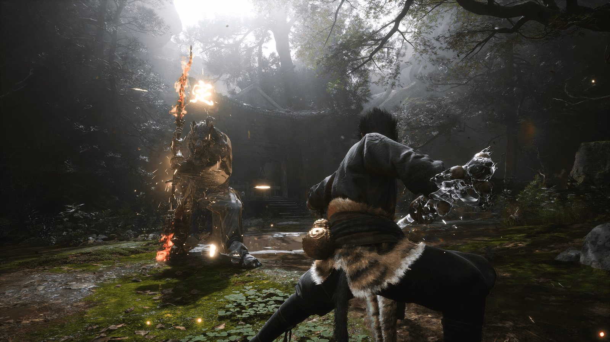

花果山的一只小猴 · The Destined One
天命人
从花果山醒来，带着一根旧棍和一身说不清的熟悉感。他要寻回大圣的六根，却总在别人的故事里看见自己。
主角神佛、妖怪、旧友与路人。西游路上没有纯粹的反派，只有放不下的人。这里记下十二位，按同行、大圣、群妖、故人四类归档。
All Beings · 众生
花果山的一只小猴 · The Destined One
从花果山醒来，带着一根旧棍和一身说不清的熟悉感。他要寻回大圣的六根，却总在别人的故事里看见自己。
主角天蓬元帅 · 净坛使者
嘴碎、贪吃、爱吹牛，可真到要紧处，九齿钉耙从不含糊。他陪天命人走这一路，像在替自己还一笔旧账。
同行者美猴王 · 斗战胜佛
曾大闹天宫，也曾护送唐僧西行。取经之后，他的六根被分藏六处，身死而意不灭——那是天命人最后要面对的东西。
大圣黑风山旧主
守着观音禅院，也守着一炉偷来的香火。他想要体面，却总用最不体面的方式去拿。
妖王黄风岭的鼠妖
一口三昧神风，吹得天地昏暗。他躲在风里，不是因为有恃无恐，而是因为不敢让人看清自己。
妖王小西天「弥勒」
自立为佛，讲经也讲歪理。人种袋收尽众生，金铙困住行者；他信的到底是佛，还是自己编出来的那套道理。
妖王盘丝岭蜈蚣精
满身金眼，金光罩体，照得人无处可藏。他等一个能破金光的人，等了很多年。
妖王圣婴大王
火焰山里长大的孩子，三昧真火随身。他恨父亲，也恨自己生来就是妖；火是他唯一的语言。
妖王平天大圣
火焰山之主，铁扇公主的丈夫，红孩儿的父亲。一身的力，也一身的累，最后被自己的家事困住。
妖王翠云山芭蕉洞主
一柄芭蕉扇熄得火焰山，却熄不了心里的火。她护着孩子，也护着一句不肯低头的硬气。
妖王灌江口显圣真君
与悟空斗过法，也识得他的本事。这一回他守的是天庭的秩序，还是自己那一点不肯认输的执念。
故人灵台方寸山 · 斜月三星洞
教出悟空七十二变，也看着他一步步走远。他从不出手，却什么都知道。
故人这一类暂无人物，换一个分类看看。
小传依据游戏内文本与《西游记》原著作了再叙述，并非官方设定；人名、别号以通行译法为准。
— OFFICIAL STILLS · 剧照
官方游戏截图，用于课程作业的图文展示；角色、场景与画面版权归游戏科学（Game Science）所有。
